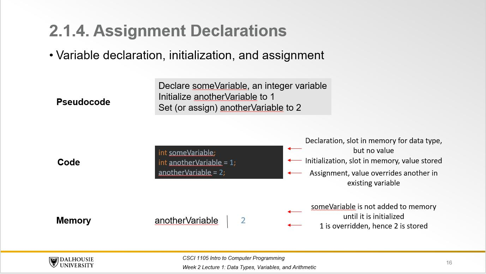
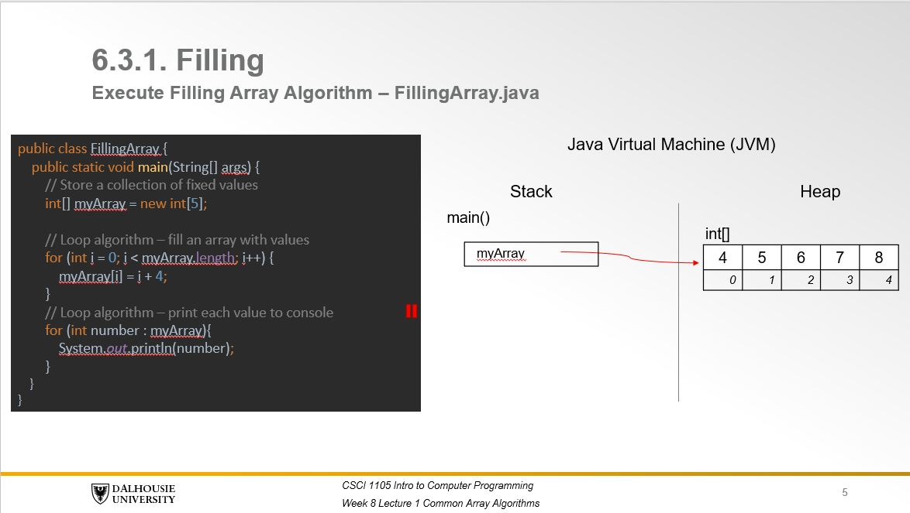
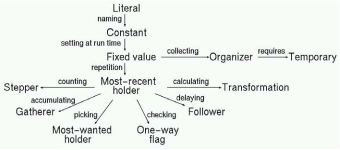

Introduction
The first few months as a marker, teaching assistant, or head teaching assistant are all important. Experiences during this period range from frustration to enjoyment, and mark the beginning of a road towards continued improvement and professional development.
For most students embarking in this path (and your instructor), you go into your first class with a good deal of anxiety. Although you may have prepared well, you may want to be liked and respected by students, but you are disconcerted about your ability to answer questions, or the uneasiness that comes from your new role and the expecations that come with grading.
Eventually, you will find that students engage and interact well in class, that you are knowledgeable of the subject, and that teaching can be exciting. Classes are unpredictable, but it can also make teaching continually engaging and challenging.
One of the most important factor in enjoying your first teaching experiences is your ability to manage class activities - getting organized, encouraging participation, and enabling students to engage in thinking about complex topics.
The goal of this site is to enable you to learn enough techniques and simple pedagogical skills to get through your first weeks without great stress and with more satisfaction.
Remember that teaching skillfully is less time consuming than doing so badly, and doing so well is more fun that teaching poorly. Make a few notes to remind you of what to do, or not do, the next time you teach and share these insights with others. Think about what you want your students to accomplish, and what you and the students need to do to achieve these goals.
Program Comprehension
Program comprehension is a theoretical construct to describe the different aspects of a mental representation for a program and how data is transformed from a set of input to output values, a common problem encountered in procedural programming tasks.
A learner builds a mental representation by engaging in several cognitive and metacognitive processes that include but are not limited to the following:
| Reading | Writing | Revising |
|---|---|---|
| Tracing | Designing | Monitoring Task Understanding |
| Explaining | Generating | Monitoring Solution |
In doing so, a learner applies their knowledge, which is different from knowledge of the syntax of a given language, the semantics of the expression, or its function in the context of solving a problem. This involves cognitive operations on information to transform it into a certain product, like translating code from pseudocode statements. The resulting product can then be evaluated by the learner against their own standards for coherence in understanding the task as well as clarity and quality of their code.
This site is meant to serve as a resource for you to review examples of these products and how you can design instruction that supports students in engaging in these cognitive and metacognitive processes by reviewing resources for answering common questions, marking assignements and giving feedback, as well as listing examples, methods, and content that can be used to support students during lab demonstrations.
The term instructional method refers to any verbal utterances (i.e., auditory information processing) between tutor and learner that is most suitable towards attaining an instructional goal or applying a certain type of knowledge. For instance, a tutor may demonstrate to the learner how to trace execution of a program by saying out loud how data values stored in memory are modified from one statement to the next while reading a program.
The term instructional content is used to refer to any pictorial information or on-screen text (i.e., visual information processing) shared between tutor and learner to facilitate goal attainment. For instance, a tutor might draw a tracing table to list the changes in values stored in memory and how these are modified from one statement to the next while reading a program.
Given this distinction, you should keep in mind Mayer's principles for multimedia content in terms of designing verbal and visual information as instructional content. This is beyond the scope of this site, but it provides some basic and simple advice that may prove useful in guiding decisions for what to display on a slide and what to say when learners attend to the content.
Another concern that is distinct from designing auditory/visual information relates to how to sequence information. In CSCI 1105, you may want to sequence examples and problems to provide instruction on reading prior to writing, and writing prior to evaluating. The same example may be used to illustrate how to trace, then explain each statement, followed by an opportunity to practice and receive feedback. The same can be said of examples of how to write a solution, covering how to design prior to generate code. One approach involves the creation of a lesson plan to keep track of each component, as in the following:
Example #1
This is one of my favorite combinations for introducing a new type of statement, so that students are exposed simultaneously in one slide to the syntax, semantic, and function of a statement.
Table. Lesson Plan Example
| Step | Procedural Knowledge | Declarative Knowledge | Method | Content |
|---|---|---|---|---|
| Slide 1 | Tracing, Designing, Generating | Arithmetic Operation | Modeling | Memory Diagram, Pseudocode, Code Example |

Figure. Slide Example
Example #2
This is another common combination used for teaching how to read a program by tracing, especially for concepts that lend themselves to common misconceptions (i.e., local variables with reference to arrays). The instructor can model how to trace, then prompt the learner to predict the following step on a problematic statement in order to coach them by proving feedback.
Table. Lesson Plan Example
| Step | Procedural Knowledge | Declarative Knowledge | Method | Content |
|---|---|---|---|---|
| Slide 1 | Tracing | Loops & Arrays | Modeling | Faded Worked Example, Subgoal and Variable Role Annotations, Memory Diagram |
| Slide 2 | Tracing | Loops & Arrays | Coaching | Faded Worked Example, Subgoal and Variable Role Annotations, Memory Diagram |

Figure. Slide Example
Reading
Tracing
Definition
Any attempt by the learner to recall and recognize syntax while reading a statement to apply their knowledge of the meaning of the operation. This involves reinstating in short term working memory the data stored in variables and inferring changes in their values from one statement to another.
Example #1 - Single Code Statement
Code:
b = 1;
a = b + 2;
Tutor: What is the value assigned to variable a?
Student: 3
Tutor: That is correct.
Example #2 - Multiple Code Statement
Code:
b = 1;
a = b + 2;
a = a * 3;
Tutor: Can you predict the output of these arithmetic operations?
Student: 9
Tutor: That is correct.
Instructional Methods
Ways to promote the development of tracing
Code:
a = 1;
b = 2;
c = 3;
a = b;
b = c;
c = a;
Modeling
Tutor performs a task so students can observe
Tutor: Assuming that is a is set to 1, b to 2, and c to 3; then, the first assignment operation assigns 2 to a, then 3 to b, and finally 1 to c.
Coaching
Tutor observes and facilitates while students perform a task
Tutor: Try to write values assigned to each variable in this series of variable assignment operations.
Student: Assuming that is a is set to 1, b to 2, and c to 3; then, the first assignment operation assigns 2 to a, then 3 to b, and finally 1 to c.
Tutor: That is correct.
Scaffolding
Tutor provides support to help the student perform a task
Tutor: Assuming that is a is set to 1, b to 2, and c to 3; then, the first assignment operation assigns 2 to a, and what are the remaining values assigned to each variable?
Student: 3 to b, and finally 1 to c.
Tutor: That is correct.
Articulation
Tutor encourages students to verbalize their knowledge and thinking
Tutor: Tracing involves reading the program to infer how values assigned to variables in memory are changed from one statement to the next. It's common practice to do so by verbalizing out loud or writing on a piece of paper to avoid mistakes. For example, the first assignment operation assigns 2 to a, and what are the remaining values assigned to each variable?
Student: 3 to b, and finally 1 to c.
Reflection
Tutor enables students to compare their performance with others
Tutor: A common mistake is to mix values because it's difficult to hold each of them in memory for more than a few seconds. Try repeating them out loud, writing them down, or grouping them, as in abc is assigned 123 (one hundred twenty three).
Exploration
Tutor invites students to pose and solve their own problems
Tutor: Can you the predict the resulting output of these assignment operations if c were assigned 6 instead of 3?
Instructional Content
Types of representations required for tracing
Code:
a = 1;
b = 2;
c = 3;
a = b;
b = c;
c = a;
Data Values Annotations
Inline comments limited to single- or multi-line content in the text editor. Students may attempt to fill a problem step that is faded out from the worked example.
Code:
/*
Memory
a | 2
b | 3
c | 1
*/
Tracing Tables
Table listing variables and values filled or partially filled with pen and paper or in a digital format. Students may attempt to fill a problem step that is faded out from the worked example.
| a | b | c |
|---|---|---|
2 |
3 |
1 |
Example Tracing Table
Control Flow as Graph
Diagram that represent method bodies and the different branches in the control flow or order of statement execution as flow chart.
Example Control Flow Diagram
Expression Tree Diagrams
Diagram depicting operands and operators as tree node representations.
Example Expression Tree Diagram
Memory Diagrams
Diagram listing stack, heap, and method memory area to understand notions related to the JVM memory structure and management (local, instance, and static variables, respectively). Students may attempt to fill a problem step that is faded out from the worked example.
Please find below a list of common misconceptions illustrated as memory diagrams as well as control flow and expression tree diagrams in Java:
Arithmetic Operations
- ArithmeticPlusPrecedes
- LocalVariablesAutoInitialized
- NoAtomicExpression
- NoReservedWords
- OutsideInMethodNesting
- VariablesHoldExpressions
String Operations
- AssignmentCopiesObject
- CharNotNumeric
- NullIsObject
- StringLiteralNoObject
- StringPlusStringifiesExpression
- VariablesHoldObjects
Decisions
- AssignCompares
- ConditionalIsSequence
- IfIsLoop
- NoShortCircuit
- NoSingleLogicAnd
- ComparisonWithBooleanLiteral
- EqualityOperatorComparesObjectsValues
- EqualsComparesReferences
Arrays
Loops and Arrays
Methods
Recursive Methods
References
Nelson, Greg L., Andrew Hu, Benjamin Xie, and Amy J. Ko. "Towards validity for a formative assessment for language-specific program tracing skills." In Proceedings of the 19th Koli Calling International Conference on Computing Education Research, pp. 1-10. 2019.
Xie, Benjamin, Greg L. Nelson, and Andrew J. Ko. "An explicit strategy to scaffold novice program tracing." In Proceedings of the 49th ACM Technical Symposium on Computer Science Education, pp. 344-349. 2018.
Juha Sorva. 2013. Notional Machines and Introductory Programming Education. ACM Trans. Comput. Educ., Vol. 13, 2 (July 2013), 1--31. https://doi.org/10.1145/2483710.2483713 Place: New York, NY, USA Publisher: Association for Computing Machinery.
Colleen M. Lewis. 2021. Physical Java Memory Models: A Notional Machine. In Proceedings of the 52nd ACM Technical Symposium on Computer Science Education (SIGCSE '21). Association for Computing Machinery, New York, NY, USA, 383–389. DOI:https://doi.org/10.1145/3408877.3432477
Lewis, Colleen M. 2020. Physical Java Memory Models: A Notional Machine. https://www.youtube.com/playlist?list=PLHqz-wcqDQIE6nNE58CaEoHJKhSD_4J4S. Accessed: 2020-11-26.
Reading
Explaining
Definition
Any attempt by the learner to apply their knowledge of the meaning of the operation while reading a statement to infer its function. This involves reinstating in short term working memory the goal and common patterns of programs and role of variables as well as inferring the subgoal of any given statement.
Example #1 - Single Code Statement
Code:
min = someArray[0];
for(int i = 0; i < someArray.length; i++({
if(someArray[i] < min){
min = someArray[i];
}
}
Tutor: What is the purpose of the variable min?
Student: To hold the most-wanted value, the minimum.
Tutor: That is correct.
Example #2 - Multiple Code Statement
Code:
min = someArray[0];
for(int i = 0; i < someArray.length; i++({
if(someArray[i] < min){
min = someArray[i];
}
}
Tutor: What is the purpose of the algorithm?
Student: The loop algorithm finds the minimum value in an array.
Tutor: That is correct.
Instructional Methods
Ways to promote the development of explaining
Code:
a = 1;
b = 2;
c = 3;
a = b;
b = c;
c = a;
Modeling
Tutor performs a task so students can observe
Tutor: Given that the goal of the algorithm is to swap variables, the variables a and b stored the most-wanted values, while c stores a value temporarily.
Coaching
Tutor observes and facilitates while students perform a task
Tutor: Try to infer the function of each variable and the program.
Student: Given that the goal of the algorithm is to swap variables, the variables a and b stored the most-wanted values, while c stores a value temporarily.
Tutor: That is correct.
Scaffolding
Tutor provides support to help the student perform a task
Tutor: Assuming that the goal of this program is to swap variables, and c stores a temporary value, then what is function of variables a and b?
Student: The variables a and b store the most-wanted values, which are swapped.
Tutor: That is correct.
Articulation
Tutor encourages students to verbalize their knowledge and thinking
Tutor: Explaining involves reading the program to infer the function of algorithms and variables as well as recognize patterns. It's common practice to do so by verbalizing out loud, writing on a piece of paper, or adding an inline comment to improve the quality of the code. For example, the variable a stores 2 temporarily, and what is the function of the remaining statements?
Student: b and c stores the most-wanted values, which are swapped.
Reflection
Tutor enables students to compare their performance with others
Tutor: A common mistake in swapping values is to forget that an additional variable is needed to store a value. Try to comment the code block to indicate the swap in values as well as the variable initialized with a temporary value.
Exploration
Tutor invites students to pose and solve their own problems
Tutor: Can you re-write the variable or function names to better reflect their function?
Instructional Content
Types of representations required for explaining
Code:
a = 1;
b = 2;
c = 3;
a = b;
b = c;
c = a;
Subgoal Annotations
Inline comments limited to single- or multi-line content in the text editor and involve evaluating different statements types while reading programs.
Code:
// INPUT AREA
// store temp value
a = 1;
// store most-wanted values
b = 2;
c = 3;
// Diagram the order of assignment statements for the variable swap algorithm
...
Table. Common Subgoal Annotations
| Evaluate |
|---|
|
Subgoals for evaluating (assignment) expressions
|
|
Subgoals for evaluating selection statements
|
|
Subgoals for evaluating loops
|
|
Subgoals for calling or tracing methods
|
|
Subgoals for using objects (creating instances)
|
|
Subgoals for evaluating arrays
|
References
Lauren E. Margulieux, Briana B. Morrison, and Adrienne Decker. 2019. Design and Pilot Testing of Subgoal Labeled Worked Examples for Five Core Concepts in CS1. In Proceedings of the 2019 ACM Conference on Innovation and Technology in Computer Science Education (ITiCSE '19). Association for Computing Machinery, New York, NY, USA, 548–554. DOI:https://doi.org/10.1145/3304221.3319756
Decker, A., & Morrison, B., & Margulieux, L. E. (2019, June), Board 37: Developing Subgoal Labels for Imperative Programming to Improve Student Learning Outcomes Paper presented at 2019 ASEE Annual Conference & Exposition , Tampa, Florida. 10.18260/1-2--32333
Briana B. Morrison, Lauren E. Margulieux & Adrienne Decker (2020) The curious case of loops, Computer Science Education, 30:2, 127-154, DOI: 10.1080/08993408.2019.1707544
Variable Roles
Common roles or functions assigned to variables within programs. Students may choose a role for a variable that is faded out from the worked example.
Code:
TemporaryMost-wanted value
a = 1;
b = 2;
c = 3;
a = b;
b = c;
c = a;
Table. Common Variable Goals
| Roles | Definition |
|---|---|
| Fixed value | The role of a variable or an attribute is a fixed value, if its value is not changed after
intialization. // Store a fixed value |
| Stepper | Stepper goes through a succession of values in some systemic way // Traverse the indexes of _____ |
| Most-recent holder | The value of a most-recent holder is the latest gone through value of a certain group or simply the latest
input value // Store the most-recent input |
| Most-wanted holder | The value of a most-recent holder is the latest gone through value of a certain group or simply the latest
input value // Store the most-recent input |
| Gatherer | The value of the gatherer accumulates all the values gone through so far. // Gather all values |
| Follower | A follower always gets the old value of another known variable or attribute as its new value // Store the old value |
| One-way flag | A one-way flag has two possible values but cannot get its original value anymore after it has been once
changed. A one-way flag can also be used, for example, to watch errors occuring in input data so that the
program could ask the inputs again. // Store a boolean flag |
| Temporary | The value of a temporary is always needed only for a very short period. A temporary is typically used for
efficiency reasons (e.g., executing a computation, whose value is needed in several places, only once) or to
clarify the program (e.g., computing the result in a variable even though the use of a variable would not be
absolutely necessary). A temporary is also often used for swapping two data elements of an
organizer. // Store a temporary value |
| Organizer | An organizer is a data structure which is used for reorganizing its elements after initialization. An
organizer can be used for sorting or for some other reorganization. // Store a collection of values |

Introduce roles incrementally (Kuittinen & Sajaniemi, 2004)
Lists of common algorithms in procedural programming tasks
Table. Common Selection Statements
| Common selection algorithm | Definition |
|---|---|
| Input validation | Ensure that the next input is a specific data type |
Table. Common loop algorithms
| Common loop algorithm | Definition |
|---|---|
| Processing a sentinel | A sentinel value denotes the end of a data set, but it is not part of the data. |
| Sum and average value | To compute an average, keep a total and a count of all values |
| Counting matches | To count values that fulfill a condition, check all values and increment a counter for each match. |
| Finding the first match | If your goal is to find a match, exit the loop when the match is found. |
| Prompting until a match is found | Keep asking the user to provide a correct input |
| Maximum and minimum | To find the largest value, update the largest value seen so far whenever you see a larger one |
| Comparing adjacent values | To compare adjacent inputs, store the preceding input in a variable |
Table. Common array algorithms
| Common array algorithm | Definition |
|---|---|
| Filling | A loop fills an array with some values. |
| Sum and average value | To compute an average, keep a total and a count of all values. |
| Maximum and minimum | To find the largest value, update the largest value seen so far whenever you see a larger one. |
| Element separators | To display the elements of an array, you usually want to separate them, often with commas or vertical lines. |
| Linear search | A linear search inspects elements in sequence until a match is found. |
| Removing and element | Remove an element at a given index position from the array values. |
| Inserting an element | Use a temporary variable when swapping two elements. |
| Swapping elements | Insert an element into an array by moving elements to the end of the array starting with the last one. |
| Copying arrays | Use the Arrays.copyOf method to copy the elements of an array into a new array. |
| Reading input | Add the inputs to an array until the end of the input has been reached. |
| Growing arrays | Grow an array to hold all inputs. |
References
Pauli Byckling and Jorma Sajaniemi. 2006. Roles of variables and programming skills improvement. SIGCSE Bull. 38, 1 (March 2006), 413–417. DOI:https://doi.org/10.1145/1124706.1121470
Sajaniemi, J. (2005, October). Roles of variables and learning to program. In Proc. 3rd Panhellenic Conf. Didactics of Informatics, Jimoyiannis A (ed) University of Peloponnese, Korinthos, Greece.
Sajaniemi, J., & Navarro-Prieto, R. (2005). Roles of Variables in Experts' Programming Knowledge. In PPIG (p. 13).
Orna Muller, David Ginat, and Bruria Haberman. 2007. Pattern-oriented instruction and its influence on problem decomposition and solution construction. In Proceedings of the 12th annual SIGCSE conference on Innovation and technology in computer science education (ITiCSE '07). Association for Computing Machinery, New York, NY, USA, 151–155. DOI:https://doi.org/10.1145/1268784.1268830
Orna Muller. 2005. Pattern oriented instruction and the enhancement of analogical reasoning. In Proceedings of the first international workshop on Computing education research (ICER '05). Association for Computing Machinery, New York, NY, USA, 57–67. DOI:https://doi.org/10.1145/1089786.1089792
Writing
Designing
Definition
Any attempt by the learner to plan a solution prior to writing by applying their knowledge of heuristics. This involves decomposing a problem by re-reading a problem prompt, drawing examples, sketching design tables, control flow, or expression tree diagrams, and generating subgoal annotations (ambiguous).
Example #1 - Single Code Statement
Prompt: ... play who deliberately interferes with a moving ball has a two-stroke penalty.
Tutor: How would you handle the two-stroke penalty when counting strokes?
Student: Set count, an integer type variable to the addition of count and 2.
Tutor: That is correct.
Example #2 - Multiple Code Statement
Prompt: ... play who deliberately interferes with a moving ball has a two-stroke penalty.
Tutor: How would you handle the two-stroke penalty when counting strokes?
Student: Set count, an integer type variable to the addition of count and 2.
Tutor: That is correct.
Tutor: That two-stroke penalty would only be applied when that event has occured though. So what else would be needed to determine whether this is the case?
Student: Set penalty, a Boolean flag to input received from the user and create a branching scenario when the condition returns true.
Tutor: Otherwise if it's not, than only a single stroke would be applied to the scorecard. What other penalties should we account for?
Instructional Methods
Ways to promote the development of designing skills
Solution:
a = 1;
b = 2;
c = 3;
a = b;
b = c;
c = a;
Modeling
Tutor performs a task so students can observe
Tutor: To design a variable swap algorithm, you may write the following pseudocode:
Initialize a, b, c, integer type variables to 0
Set b and c to input read from console
Set a to b, b to c, and c to a
a holds a temporary value, enabling b and c to hold the most-wanted swapped values
Coaching
Tutor observes and facilitates while students perform a task
Tutor: Write the pseudocode from the variable swap algorithm.
Student: To design a variable swap algorithm, I would first do the following:
Initialize a, b, c, integer type variables to 0
Set b and c to input read from console
Set a to b, b to c, and c to a
a holds a temporary value, enabling b and c to hold the most-wanted swapped values
Scaffolding
Tutor provides support to help the student perform a task
Tutor: Let's initialize a, b, and c, integer type variables. What variables would you set to input read from console?
Student: b and c.
Tutor: What is the role of a?.
Student: To hold the first value from b, and pass it on to c.
Articulation
Tutor encourages students to verbalize their knowledge and thinking
Tutor: Designing involves reading the problem prompt to note pertinent information, draw examples, and sketch diagrams to illustrate the steps involved in transforming an input to an output. It's common practice to do so by writing pseudocode or sketching a control flow diagram to decompose the different aspects of the problem. Have you tried sketching a control flow diagram?
Reflection
Tutor enables students to compare their performance with others
Tutor: A common mistake is forgetting to assign the temporary value held in a to c due to the difficulty of tracing all 3 values as they change from one variable to the next.
Exploration
Tutor invites students to pose and solve their own problems
Tutor: Can you list a temporary variable and two additional variables that will hold the swapped values in a design table?
Instructional Content
Types of representations required for designing
Drawing Control Flow Diagrams
Sketch using pen and paper the order of operations to highlight and revise the desired control flow and build an understanding for how data values should be transformed from a set of input and to ouput.

Example Control Flow Diagram
Writing Pseudocode Statements
Write in natural language a description of statements for the program that are not ambiguous and to be translated later as code (i.e., proper syntax in any given language).
Example Pseudocode Statements
| Type | Statement |
|---|---|
| Assignment Expressions |
Initialize someVar, an integer variable to 0 Declare someVar, an integer variable Set someVar to 1 |
| Selection Statements |
If someVar ... Add statement Else If anotherVar ... Add statement Else ... Add statement |
| Loop Statements |
For i = 0 to length of someVar OR Repeat for the length of someVar ... Add statement While someVar ... Add statement Do ... Add statement While someVar |
| Arrays |
Initialize someVar, an integer array to length of 10 Declare someVar, an integer array Set someVar at index 2 to value of 10 |
Examples of Pseudocode #1
Examples of Pseudocode #2
Parsons Problems
A type of practice problem where the syntactic statements are already correctly written, but must be re-arranged by learners for the program to meet requirements and achieve a stated goal.
Example Parson ProblemsReferences
Kathryn Cunningham, Shannon Ke, Mark Guzdial, and Barbara Ericson. 2019. Novice Rationales for Sketching and Tracing, and How They Try to Avoid It. In Proceedings of the 2019 ACM Conference on Innovation and Technology in Computer Science Education (ITiCSE '19). Association for Computing Machinery, New York, NY, USA, 37–43. DOI:https://doi.org/10.1145/3304221.3319788
Grady Booch. 2010. Why don't developers draw diagrams? In Proceedings of the 5th international symposium on Software visualization (SOFTVIS '10). Association for Computing Machinery, New York, NY, USA, 3–4. DOI:https://doi.org/10.1145/1879211.1879214
Kathryn Cunningham, Sarah Blanchard, Barbara Ericson, and Mark Guzdial. 2017. Using Tracing and Sketching to Solve Programming Problems: Replicating and Extending an Analysis of What Students Draw. In Proceedings of the 2017 ACM Conference on International Computing Education Research (ICER '17). Association for Computing Machinery, New York, NY, USA, 164–172. DOI:https://doi.org/10.1145/3105726.3106190
Lane, H. & Vanlehn, Kurt. (2005). Teaching the tacit knowledge of programming to noviceswith natural language tutoring. Computer Science Education. 15. 183-201. 10.1080/08993400500224286.
Nathaniel Weinman, Armando Fox, and Marti A. Hearst. 2021. Improving Instruction of Programming Patterns with Faded Parsons Problems. In Proceedings of the 2021 CHI Conference on Human Factors in Computing Systems (CHI '21). Association for Computing Machinery, New York, NY, USA, Article 53, 1–4. DOI:https://doi.org/10.1145/3411764.3445228
Writing
Generating
Definition
Any attempt by the learner to implement a solution during the writing task by applying their knowledge of heuristics. This involves constructing a solution by translating pseudocode (unambiguous) into code that adheres to styling guidelines as well as successfully compiles and meets all requirements.
Example #1 - Single Code Statement
Pseudocode:Set count, an integer type variable to the addition of count and 2.
Tutor: Can you try writing the assignment operation for the count variable?
Student: Sure, let me try.
Code:
count = count + 2;
Tutor: That is correct.
Example #2 - Multiple Code Statement
Pseudocode:
If penalty
Set count, an integer type variable to the addition of count and 2.
Tutor: Can you try writing the selection algorithm to update stroke in case of a penalty?
Student: Sure, let me try.
Code:
if(penalty){
count = count + 2;
}
Tutor: That is correct.
Instructional Methods
Ways to promote the development of generating skills
Solution:
a = 1;
b = 2;
c = 3;
a = b;
b = c;
c = a;
Modeling
Tutor performs a task so students can observe
Tutor: To implement a variable swap algorithm, you may translate the following code from pseudocode:
Code:
a = 1;
b = 2;
c = 3;
a = b;
b = c;
c = a;
Coaching
Tutor observes and facilitates while students perform a task
Tutor: Write the code from the variable swap algorithm.
Student: To implement a variable swap algorithm, I would first do the following:
Code:
a = 1;
b = 2;
c = 3;
a = b;
b = c;
c = a;
Scaffolding
Tutor: If I were to write the initialization statements for a, b, and c, how would you write the assignment operations?
Student: I would write the following
Code:
a = b;
b = c;
c = a;
Articulation
Tutor encourages students to verbalize their knowledge and thinking
Tutor: Implementing a solution involves writing code from pseudocode or reviewing it to ensure it adheres to styling guidelines.
Reflection
Tutor enables students to compare their performance with others
Tutor: A common mistake is naming the temporary holder variable in a way that is simmilar to those holding the most-wanted values.
Exploration
Tutor invites students to pose and solve their own problems
Tutor: Can you re-write the variable names using the camel case convention to better reflect their function?
Instructional Content
Types of representations required for generating
Example-Problem Pairs
A worked example of a solution to a problem to study just prior to solving a similar problem provides the learner with an analogy available while solving the problem. When having to actively solve a problem without the benefit of an analoguous example, most attentional resources in working memory are used up for designing a solution rather than generating code.
Interleaving analoguous examples and problems involve transfer of skills in 3 different ways (among others):
Isomorphic Transfer: The problem-solving context (i.e., cover story) between problems is the same and only the values in the problem are different.
Contextual Transfer: The problem-solving procedure between problems is the same and the contexts of the problem are different. For example, transferring knowledge from writing a program to find the average value of a waiter's tips to writing a program to find the average rainfall is contextual transfer, therefore the general steps of the procedure are the same.
Procedural Transfer: The type of problem is the same and the problem-solving procedures are different. For example, transferring knowledge from writing a while loop to find the sum of values to writing a while loop to find the average of values is procedural transfer. The steps of the procedure differ based on the components of the problem (summing or averaging), but the type of problem (using a while loop) is the same.
Steps involved in creating example-problem pairs:
Step 1: Make the example or the problem:
The height of building A is 10 meters. If the house next to it has 2 times the height of building A, how tall is the house?
Step 2: Solve the problem with the complete procedure and as clear as possible. This will serve as an example.
Step 3: Introduce transfer, for instance change the quantity in the problem or data type to modify the isomorphic properties.
The height of building A is 9.78 meter. If the house next to it has 0.26 times the height of building A, how tall is the house?
By using an analogy, students will realize that because the problems are the same (except the quantitites), the solution procedure must also be the same. This problem prompt can now be used as a practice opportunity to provide feedback. It's considered good practice to vary the level of difficulty by modifying isomorphic, contextual, and procedural aspects of the problem for students to develop their analogical thinking.
Although cover stories or surface details may make it difficult for students to identify the structural parts of problem-solving procedures that apply to similar problems, it is essential for teaching novices because abstract instruction makes it too difficult for them to grasp, allowing them to make connections to their prior knowledge. The best way to help students transfer their knowledge given changes in the conditions outlined above is to teach them how transfer their knowledge - practice and feedback on novel problem solving and how to recognize similarities between novel problems adn problems that they know how to solve.
Also take into account the following sources of transfer:
Modality Transfer: Transfer between medium of instruction and application at the macro-level (e.g., auditory instruction vs. written assignment) or micro-level (e.g., instructing based on tracing, reading, or writing code vs. testing based on tracing, reading, or writing code).
Temporal Context Transfer: Transfer across time (e.g., weeks, months, semesters). Commonly referred to as retention. Because synaptic connections fade over time (i.e., ability to recall information decays), the time between solving problems can affect transfer.
Faded Worked Examples
Another approach is to provide a worked example where a single or multiple step is removed from the solution and learners are prompted to fill the partially completed solution or missing step.
This also benefits skill transfer by focusing attentional resources to the most relevant aspect of generating code while learning a novel procedure for instance.
To scaffold the process of generating code, the faded step may be described in the form of pseudocode, prompting the learner to translate it to code.
Also, you may considering adding subgoal annotations to support students to recognize similarities or variable role annotations:
| Write |
|---|
|
Subgoals for writing expressions
|
|
Subgoals for writing selection statements
|
|
Subgoals for writing loops
|
|
Subgoals for writing methods
|
|
Subgoals for writing classes (associated rule sheets)
|
|
Subgoals for writing arrays
|
Example-Counter Example Block
A special case for worked example to illustrate adherence to code clarity and quality guidelines. An example shows the proper way to document code for instance, while the counter example illustrates common errors such as overelaborate comments, missing method and class documentation, and so on.
References
Ben Skudder and Andrew Luxton-Reilly. 2014. Worked examples in computer science. In Proceedings of the Sixteenth Australasian Computing Education Conference - Volume 148 (ACE '14). Australian Computer Society, Inc., AUS, 59–64.
Gray, Simon, Caroline St. Clair, Richard James, and Jerry Mead. "Suggestions for graduated exposure to programming concepts using fading worked examples." In Proceedings of the third international workshop on Computing education research, pp. 99-110. 2007.
Decker, A., & Morrison, B., & Margulieux, L. E. (2019, June), Board 37: Developing Subgoal Labels for Imperative Programming to Improve Student Learning Outcomes Paper presented at 2019 ASEE Annual Conference & Exposition , Tampa, Florida. 10.18260/1-2--32333
Robins, A. V., Margulieux, L. E., & Morrison, B. B. (2019). Cognitive sciences for computing education. In S. A. Fincher & A. V. Robins (Eds.) The Cambridge Handbook of Computing Education Research. Cambridge, UK: Cambridge University Press, [231-275].
Barnett, S. M., & Ceci, S. J. (2002). When and where do we apply what we learn?: A taxonomy for far transfer. Psychological Bulletin, 128(4), 612–637. https://doi.org/10.1037/0033-2909.128.4.612
Pastoriko, F & Retnowati, Endah. (2019). How to Create Isomorphic Example-Problem Pairs for Facilitating Analogical Thinking. Journal of Physics: Conference Series. 1397. 012083. 10.1088/1742-6596/1397/1/012083.
Nathaniel Weinman, Armando Fox, and Marti A. Hearst. 2021. Improving Instruction of Programming Patterns with Faded Parsons Problems. In Proceedings of the 2021 CHI Conference on Human Factors in Computing Systems (CHI '21). Association for Computing Machinery, New York, NY, USA, Article 53, 1–4. DOI:https://doi.org/10.1145/3411764.3445228
Pirolli, P., & Recker, M.M. (1994). Learning Strategies and Transfer in the Domain of Programming. Cognition and Instruction, 12, 235-275.
Revising
Monitoring Task Understanding
Definition
Any attempt by the learner to evaluate their understanding of the task by reviewing information information from the problem prompt adn reasoning about the steps involved in translating an input to an output.
Instructional Methods
Ways to promote the development of metacognitive monitoring skills
Prompt: ... the program should return an array that swap numbers.
Modeling
Tutor performs a task so students can observe
Tutor: The problem prompt suggests that the program should invert in order, including whole and floating-point numbers. An array with values including 5 and 6 should be processed and the array returned should include 6 and 5, while 5.0 and 6.0 should be inversed to 6.0 and 5.0.
Coaching
Tutor observes and facilitates while students perform a task
Tutor: What is the goal of the program? If the program receives as input an array of 5 and 6, what is returned to the caller of the method?
Scaffolding
Tutor provides support to help the student perform a task
Tutor: Since the goal of the program is to invert an array of 2 numbers, if an array of 5 and 6 is passed as a parameter, what is returned to the caller of the method?
Articulation
Tutor encourages students to verbalize their knowledge and thinking
Tutor: Always re-read the problem prompt 3 times and note down on paper any pertinent information mentioned in the prompt as well as generate additional test cases to reason about the steps involved in the control flow.
Reflection
Tutor enables students to compare their performance with others
Tutor: A common mistake is to read the prompt too quickly and miss important information or neglecting to analyze a test case that is indicative of a branching scenario in the control flow of the program.
Exploration
Tutor invites students to pose and solve their own problems
Tutor: Have you considered drawing a control flow diagram from the example that was drawn?
Instructional Content
Types of representations required for metacognitive monitoring skills
Note Solution Requirements
Note pertinent information mentioned in the problem prompt that is pertinent to building a solution.
Draw Examples
Generate additional test cases by imagining a novel set of input values and predicting the resulting output.
References
Kathryn Cunningham, Sarah Blanchard, Barbara Ericson, and Mark Guzdial. 2017. Using Tracing and Sketching to Solve Programming Problems: Replicating and Extending an Analysis of What Students Draw. In Proceedings of the 2017 ACM Conference on International Computing Education Research (ICER '17). Association for Computing Machinery, New York, NY, USA, 164–172. DOI:https://doi.org/10.1145/3105726.3106190
Grady Booch. 2010. Why don't developers draw diagrams? In Proceedings of the 5th international symposium on Software visualization (SOFTVIS '10). Association for Computing Machinery, New York, NY, USA, 3–4. DOI:https://doi.org/10.1145/1879211.1879214
Kathryn Cunningham, Shannon Ke, Mark Guzdial, and Barbara Ericson. 2019. Novice Rationales for Sketching and Tracing, and How They Try to Avoid It. In Proceedings of the 2019 ACM Conference on Innovation and Technology in Computer Science Education (ITiCSE '19). Association for Computing Machinery, New York, NY, USA, 37–43. DOI:https://doi.org/10.1145/3304221.3319788
James Prather, Raymond Pettit, Brett A. Becker, Paul Denny, Dastyni Loksa, Alani Peters, Zachary Albrecht, and Krista Masci. 2019. First Things First: Providing Metacognitive Scaffolding for Interpreting Problem Prompts. In Proceedings of the 50th ACM Technical Symposium on Computer Science Education (SIGCSE '19). Association for Computing Machinery, New York, NY, USA, 531–537. DOI:https://doi.org/10.1145/3287324.3287374
Revising
Monitoring Solution
Definition
Any attempt by the learner to evaluate a solution in terms of adherence to styling guidelines for code clarity and quality, disambiguate and search for the source of compilation errors, runtime exceptions, and logic errors to reduce discrepancies between actual and expected output.
Instructional Methods
Ways to promote the development of metacognitive monitoring skills
Prompt: ... the program should return an array that swap numbers.
Modeling
Tutor performs a task so students can observe
Tutor: The expected output of the program is [5, 6] but the actual output is 5, 6. Let's try the toString method of the Arrays class at the print statement.
Coaching
Tutor observes and facilitates while students perform a task
Tutor: What is the actual output of the program? How is that different from the expected output as described by the test case?
Scaffolding
Tutor provides support to help the student perform a task
Tutor: There isn't any error messages from the compiler nor is there any runtime exceptions; but the return value seems to be different from the expected one - do you have any suggestion on how to fix this bug?
Articulation
Tutor encourages students to verbalize their knowledge and thinking
Tutor: Errors fall in one of three categories either compilation errors, runtime exceptions, or logic errors. After fixing al lthe bugs, you can focus on the quality and clarity of your code.
Reflection
Tutor enables students to compare their performance with others
Tutor: Logic errors are common mistakes, try to draw a control flow diagram using the input values in the test case that is not met to trace the steps that are necessary to translate the correct output.
Exploration
Tutor invites students to pose and solve their own problems
Tutor: Have you tried to draw a control flow diagram to find what is the cause of the error?
Instructional Content
Types of representations required for metacognitive monitoring skills
Faulty Solutions
Practice problems where a completed solution has an error (on purpose) for the learners to find and fix.
Example-Counter Example Pair
Compare and contrast code example to develop standards for adherence to styling guidelines, including the quality and clarity of solutions.
Common Error Messages
Analyze examples of common error messages from the compiler thrown in the case of compilation errors and runtime exceptions.
Control Flow Diagram
Trace program execution for a specific test case to diagnose the cause of logic errors.
References
Kathryn Cunningham, Sarah Blanchard, Barbara Ericson, and Mark Guzdial. 2017. Using Tracing and Sketching to Solve Programming Problems: Replicating and Extending an Analysis of What Students Draw. In Proceedings of the 2017 ACM Conference on International Computing Education Research (ICER '17). Association for Computing Machinery, New York, NY, USA, 164–172. DOI:https://doi.org/10.1145/3105726.3106190
Li, C., Chan, E., Denny, P., Luxton-Reilly, A., & Tempero, E. (2019, January). Towards a framework for teaching debugging. In Proceedings of the Twenty-First Australasian Computing Education Conference (pp. 79-86).
McCauley, R., Fitzgerald, S., Lewandowski, G., Murphy, L., Simon, B., Thomas, L., & Zander, C. (2008). Debugging: a review of the literature from an educational perspective. Computer Science Education, 18(2), 67-92.
Bottcher, Axel; Thurner, Veronika; Schlierkamp, Kathrin; Zehetmeier, Daniela (2016). [IEEE 2016 IEEE Frontiers in Education Conference (FIE) - Eire, PA, USA (2016.10.12-2016.10.15)] 2016 IEEE Frontiers in Education Conference (FIE) - Debugging students' debugging process. , (), 1–7. doi:10.1109/fie.2016.7757447
Answering Questions
Definition
Answering questions in Teams is desirable to avoid overloading hours associated for in-person/online synchronous sessions. Questions asked by students typically fall in one of the four categories, please refer to the example reply as a guideline of how to write an answer.
Example #1 - Active Question
Request for help that does not display reasoning and is not framed in what the student knows or has already tried.
Student: My program is supposed to print the message same as the video recording of the lecture, but then nothing happens when clicking the play button. Any way to fix this?
Teach them how to formulate constructive questions.
Tutor: I would recommend elaborating further in your question by making explicit the previous attempt that you have taken to solve the problem, as well as explain how the actual output of the program is different from what you expected. If it is suitable, copy/paste a brief snippet of the output obtained in the IntelliJ console or Mimir test case/the current instructions included in your program. For students reading this thread, remember to avoid copying and pasting code snippets from the forum due to the plagiarism detection in Mimir. If you are uncomfortable sharing your solution in this thread, share your screen during office hour sessions with TAs or the course instructor.
Example #2 - Constructive Question
Questions that reflect students’ reasoning or attempts to construct a solution to the problem.
Student: How does one define “strongly typed?” based on that why is Java a strongly typed language? I can’t find any reference to this in the textbook.
Elaborate/correct misconceptions and suggest a learning strategy.
Tutor: Java is a strongly typed programming language because every variable must be declared with a data type, such as integer, character, floating point, and so on. This is different from other languages like JavaScript where only a single keyword (var) is used to declare variable. I recommend W3school as a useful reference on the notion of data type: https://www.w3schools.com/java/java_data_types.asp.
Example #3 - Logistical Question
Questions on course policies, schedules, and assignment submission mechanisms. Not necessarily related to computer science content.
Student: On the syllabus, the office hours for TA’s aren’t listed. Where can I find them?
Step 1: Check the syllabus/Brightspace course content and make your interpretation if the answer is not ambiguous.
Tutor: Navigate to the Brightspace course section and select Content > Office Hours.
Step 2: If the question is ambiguous, quickly search through the Brightspace discussion forum or previous emails to draw an analogy from a similar question-answer thread. Refer the student to this thread or copy the previous answer verbatim.
Step 3: Formulate a tentative answer and send to the Head TA for approval in Microsoft Teams. The Head TA and Instructor will consult on a weekly basis/separate chat thread and if required, make further inquiries with other Faculty to ensure consistency and fairness in policy making.
Example #4 - Content Clarification
Request for additional information on project assignments. Does not involve a question on the student's own problem-solving work.
Student: I'm a bit confused on what we are doing exactly. Are we asking the user to input all of the data and then after they've input all of the data, then we format it. Or are we making a program that formats data that has already been inputted?
Ensure that other students can recognize the assignment identifier (e.g., PoD 2.1), clarify or paraphrase and allude to helpful features in Mimir.
Tutor: In the PoD 2.1 assignment, the input instructions are not currently provided in the solution to the problem. I always recommend to read instructions slower than typical reading speed, and to do this three times before planning a solution. You’ll notice it is mentioned on line (add quote). You can add the input instructions in the code editor window between the commented section startling on line (add number).
General Guidelines for Questions About Assignments
Code writing exercises assess a range of different skills in solving problems and reasoning. My recommendation is to support students to evaluate their understanding of the task and read a program without any restriction, including reinterpreting problem prompts, highlighting important information, as well as tracing and explaining any aspects of student-produced solutions. In terms of reflecting on the quality and/or functionality of the solution, I also encourage you to point out areas where the style of their code can be improved, disambiguate error messages related to syntax errors or runtime exceptions, as well as to assist in searching and locating the source of logic errors when debugging by tracing or sketching the control flow. In terms of supporting students to write their solutions, they're are restrictions in place to ensure academic integrity and fairness of the assessment. Any instructional content that pertains to desiging code blocks of the solution may be sketched while discussing with an individual student given that it reflects their own work, but will be removed from any Teams post while moderating the chat. Furthermore, hints can be provided as a form of scaffolding when students need help in terms of single code statements, either in the form of subgoal annotations, pseudocode (use generic variable names, like someVar), or a reference to the course cheatsheet. Any direct quote that pertains to aspects of a solution to a problem will be taken down from Teams while moderating course discussions. This policy ensures the validity and reliability of the assessment and is meant to discourage "gaming" office hours and academic integrity violations.
Marking Assignments
Definition
Answering questions in Teams is desirable to avoid overloading hours associated for in-person/online synchronous sessions. Questions asked by students typically fall in one of the four categories, please refer to the example reply as a guideline of how to write an answer.
Marking assignments in terms of the quality and clarity of code is often conducted in the case of assignments (to remove marks from a functional solution) or practicums (to add marks in case of solutions that fail to pass all test cases).
You'll find this guide as a useful reference on how to provide feedback in Mimir as well as a site related to the grading rubric categories that you may share with students. Worked examples (and counter examples) of different aspects for code quality and clarity are introduced gradually throughout the course, so consult with the head TA or instructor in how to take these into consideration in a gradual manner.
Citation
Poitras, E. (2021). Programming Language Learning. https://ericpoitras.github.io/proglanglearn/.
Acknowledgements
This website is supported in part by funding from the Social Sciences and Humanities Research Council.